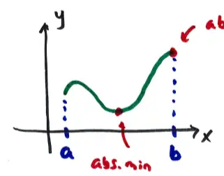

15.7 Max/min problems (part 2)
If \( y = f(x) \), \( a \leq x \leq b \) then the absolute max/min of \( f(x) \) can be at the ends of the interval or at critical pts inside the interval.

Procedure:
- Find all interior critical pts
- Compare \( f(x) \) at the critical pts and at ends to find max/min
\( z = f(x, y) \) is a surface and domain is a region in xy-plane and the boundaries are curves.
The basic idea is the same:
- Find all interior critical pts
- Then find all possible locations of max/min on the boundaries
- Then compare \( f(x, y) \)